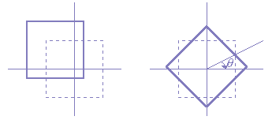
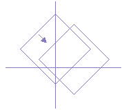
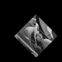
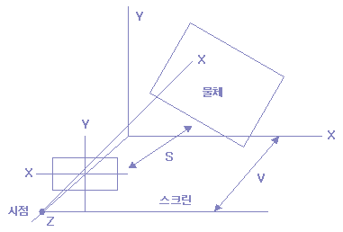
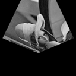
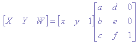
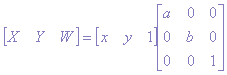
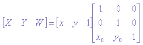
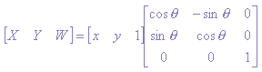
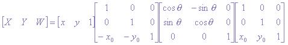

아핀 변환(Affine transform)
위에서 설명한 확대, 축소, 이동, 회전을 조합하면, 여러 가지 형태가 가능하다.
지금까지의 설명은, 보통 원점을 중심으로 한 변형에 대한 설명이었지만 임의의
점을 중심으로 한 회전, 확대, 축소도 가능하다.
예를 들면 (x0, y0)를 중심으로 한 회전은, 영상을 먼저 (-x0, -y0)로 이동하고,
(x0, y0)를 원점으로 하여도 회전시킨 후 (x0, y0)만큼 이동 시키면 얻을 수 있다.
 
(a) ((a) (-x0, -y0) 이동 (b) q 회전 (c) (+x0, +y0) 이동
[그림 12] 영상 데이터의 회전>
이 기법을 프로그램적으로 살펴보면, 앞에서 설명한 이동, 회전, 이동을 차례로 수행하는 과정이라고 할 수 있다.
이 기법은 처리과정에서 주소(address)계산, 영상 데이터 access,
농도값 계산등의 과정을 거치므로 많은 처리시간이 필요하다.
주소의 계산은 다음의 식으로 구할 수 있다.
X = (x-x0)cosq + (y-y0)sinq+x0
Y = -(x-x0)sinq + (y-y0)cosq+y0 [식 8]
이것의 역 변환은 다음과 같다.
x = (X-x0)cosq - (Y-y0)sinq+x0
y = (X-x0)sinq + (Y-y0)cosq+y0 [식 9]
이 과정을 프로그램으로 살펴보면 다음과 같다.
¡ Affin 변환
/*****function for Affin transform *************/
void affin(float deg, float zx,
float zy, float px, float py){
int i, j, buf1, buf2;
float x, y, p, q;
int xs=SIZE/2;
int ys=SIZE/2;
double r;
float c, s;
int data;
r = deg * 3.141592/180.0;
/* radian 값 */
c = cos(r); /* cosine 값 */
s = sin(r); /* sine 값 */
for (i=-ys; i<0) buf1=y; />* 양수인 경우 */
else buf1 = y - 1;
/* 음수인 경우 */
if (x>0) buf2 = x;
else buf2 = x - 1;
q = y - buf1;
p = x - buf2;
/* -SIZE/2
-ys) &&
(buf1 < ys) &&
(buf2 > -xs) && (buf2 < xs))
data = RetrunData(p, q, buf1, buf2, xs, ys);
else
data = 0;
/* 범위에 들어가지 않는 경우 */
if (data < 0) data = 0;
/* data가 0 이하 255 이상인 경우*/
if (data >255) data=255;
image_out[i+ys][j+xs]=data;
/* 그외의 경우는 data를 mapping 한 위치에 저장한다. */
} }}
¡ 인접 4점간의 보간을 취하여 데이터값을 구하는 함수
(선형 보간법)
/*function to get return value by compansation method**/
int ReturnData(float p,float q,int
buf1,int buf2,int xs,int ys)
{
int data;
data = (1.0-q)*((1.0-p)*image_in[buf1+ys][buf2+xs]
+ p*image_in[buf1+ys][buf2+1+xs])
+ q*((1.0-p)*image_in[buf1+1+ys][buf2+xs])
+ p*image_in[buf1+1+ys][buf2+1+xs]);
return(data);}
위의 프로그램에서 보여 주는 기하학적 변환을 2차원 아휜(Affin) 변환이라 한다.
2차원의 아휜변환은 다음과 같이 표현된다.
X = ax + by + c Y = dx + ey + f [식 10]
이것의 역변환은 다음과 같다.
x = AX + BY + C y = DX + EY + F [식 11]
위의 Affine 프로그램을 실행 시켰을 때의 결과 화면은 다음과 같다.

(a) 축소, shift, rotate (b)확대, rotate
[그림 13] affin 변환>
위의 수식을 보면 파라미터는 다르지만 형태는 동일하다는 것을 알 수 있다.
앞에서 설명한 확대, 축소의 식 [식 1], [식 2], 위치 이동의 식 [식 4], [식 5],
회전의 식 [식 6], [식 7]은 모두 [식 10], [식 11]에 포함되어 있다.
[식 G-10], [식 G-11]은 1차의다항식 이지만 이것을 고차원의 다항식으로 변환시키면
좀더 복잡한 기하학 변환도 가능하다(이러한 변환을 투시 변환이라 한다).
이 기법을 이용하면 우리가 그림을 그릴 때 원근을 묘사하는 것과 같은 효과를 얻을 수 있다.
이 과정을 그림으로 살펴보면 다음과 같다.

[그림 14] 시점과 사물과의 시각적 관계>
위의 그림에서 보여주는 바와 같이, 물체를 시점으로부터 보고, 입체가 화면상에 촬영될 수 있는 영상이 투시
변환된 영상이다. 이 투시 변환은 다음 식에 의하여 구할 수 있다.
X = (ax + by + c) / (px + qy + r)
Y = (dx + ey + f) / (px + qy + r) [식 12]
이 투시변환의 역변환은 다음과 같다.
x = (AX + BY + C) / (PX + QY + R)
y = (DX + EY + F) / (PX + QY + R) [식 13]
여기에서 a, b, c 와 A, B, C등은 변환 파라미터로서 눈의 위치,
화면의 위치, 크기에 의해서 변화한다.
이 파라미터들은 동차좌표 표현을 이용한 행렬 연산을 행하여 간단히 구할 수 있다.
투시 변환을 실행하는 프로그램은 다음과 같다.
¡ 투시 변환 함수
/***** function to get perspect transform *****/
void Perspect(float zx,float zy,float p_x,float p_y,
float p_z, float rot_z,float rot_x,float
rot_y,float view,float screen)
{
int i,j,buf1,buf2; /* declaration */
float x,y,w,p,q;
float k[9];
int xs = SIZE/2;
int ys = SIZE/2;
int data;
/* compute the parameter value */
ParameterCalculate(k,zx,zy,p_x,p_y,p_z,rot_z,
rot_x,rot_y,view,screen);
for(i = -ys; i < ys; i++) {
for(j = -xs; j < xs; j++) {
w = k[0]*j + k[1]*i + k[2];
x = k[3]*j + k[4]*i + k[5];
y = k[6]*j + k[7]*i + k[8];
x = x/w;
y = y/w;
if(y > 0) buf1 = y; else buf1 = y-1;
if(x > 0) buf2 = x; else buf2 = x-1;
q = y - buf1;
p = x - buf2;
if((buf1 > -ys) &&
(buf1 < ys) &&
(buf2 > -xs) && (buf2 < xs))
data = ReturnData(p,q,buf1,buf2,xs,ys);
else
data = 0;
if(data < 0) data = 0;
if(data > 255) data = 255;
image_out[i+ys][j+xs] = data;
} }}
¡ 파라메터 계산 함수
/*** function to compute parameter value *****/
void ParameterCalculate(float k[],float zx,float zy,
float p_x,float p_y,float p_z,
float rot_z,float rot_x,float rot_y,
float view,float screen)
{
float ma[4][4],mb[4][4],mc[4][4],
k1,k2,k3,k4,k5,k6,k7,k8,k9;
double u,v,w;
int I;
int xs = SIZE/2;
/* rotation degree on x,y,z axis */
u = rot_x*3.141592/180.0;
v = rot_y*3.141592/180.0;
w = rot_z*3.141592/180.0;
/* nomalization matrix */
ma[0][0] = 1.0/xs; ma[0][1] = 0;
ma[0][2] = 0; ma[0][3] = 0;
ma[1][0] = 0;
ma[1][1] =-1.0/xs;ma[1][2] = 0; ma[1][3] = 0;
ma[2][0] = 0;
ma[2][1] = 0; ma[2][2] = 1; ma[2][3] = 0;
ma[3][0] = 0;
ma[3][1] = 0; ma[3][2] = 0; ma[3][3] = 1;
/* matrix for expansion and contraction */
mb[0][0] =zx;
mb[0][1] = 0; mb[0][2] = 0; mb[0][3] = 0;
mb[1][0] = 0;
mb[1][1] =zy; mb[1][2] = 0; mb[1][3] = 0;
mb[2][0] = 0;
mb[2][1] = 0; mb[2][2] = 1; mb[2][3] = 0;
mb[3][0] = 0;
mb[3][1] = 0; mb[3][2] = 0; mb[3][3] = 1;
Matrix(ma,mb,mc);
/* matrix for shift */
ma[0][0] = 1;
ma[0][1] = 0; ma[0][2] = 0; ma[0][3] = 0;
ma[1][0] = 0;
ma[1][1] = 1; ma[1][2] = 0; ma[1][3] = 0;
ma[2][0] = 0;
ma[2][1] = 0; ma[2][2] = 1; ma[2][3] = 0;
ma[3][0] = p_x;
ma[3][1] = p_y; ma[3][2] = p_z; ma[3][3] = 1;
Matrix(mc,ma,mb);
/* matrix for rotation on z axis */
mc[0][0] = cos(w);
mc[0][1] = sin(w);mc[0][2] = 0; mc[0][3] = 0;
mc[1][0] = -sin(w);
mc[1][1] = cos(w);mc[1][2] = 0; mc[1][3] = 0;
mc[2][0] = 0;
mc[2][1] = 0; mc[2][2] = 1; mc[2][3] = 0;
mc[3][0] = 0;
mc[3][1] = 0; mc[3][2] = 0; mc[3][3] = 1;
Matrix(mb,mc,ma);
/* matrix for rotation on x axis */
mb[0][0] = 1;
mb[0][1] = 0; mb[0][2] = 0; mb[0][3] = 0;
mb[1][0] = 0;
mb[1][1] = cos(u);mb[1][2]=sin(u);mb[1][3] = 0;
mb[2][0] = 0;
mb[2][1] =-sin(u);mb[2][2]=cos(u);mb[2][3] = 0;
mb[3][0] = 0;
mb[3][1] = 0; mb[3][2] = 0; mb[3][3] = 1;
Matrix(ma,mb,mc);
/* matrix for rotation on y axis */
ma[0][0] = cos(v);
ma[0][1] = 0; ma[0][2]=sin(v);ma[0][3] = 0;
ma[1][0] = 0;
ma[1][1] = 1; ma[1][2] = 0; ma[1][3] = 0;
ma[2][0] = -sin(v);
ma[2][1] = 0; ma[2][2]=cos(v);ma[2][3] = 0;
ma[3][0] = 0;
ma[3][1] = 0; ma[3][2] = 0; ma[3][3] = 1;
Matrix(mc,ma,mb);
/* matrix to change view point */
mc[0][0] = 1;
mc[0][1] = 0; mc[0][2] = 0; mc[0][3] = 0;
mc[1][0] = 0;
mc[1][1] = 1; mc[1][2] = 0; mc[1][3] = 0;
mc[2][0] = 0;
mc[2][1] = 0; mc[2][2] = -1; mc[2][3] = 0;
mc[3][0] = 0;
mc[3][1] = 0; mc[3][2] =view; mc[3][3] = 1;
Matrix(mb,mc,ma);
/* matrix for perspect transform */
mb[0][0] = 1;
mb[0][1] = 0; mb[0][2] = 0; mb[0][3] = 0;
mb[1][0] = 0;
mb[1][1] = 1; mb[1][2]= 0; mb[1][3] = 0;
mb[2][0]=0;
mb[2][1]=0;mb[2][2]=1/screen;mb[2][3]=1/screen;
mb[3][0] = 0;
mb[3][1] = 0; mb[3][2] = -1; mb[3][3] = 1;
Matrix(ma,mb,mc);
/* normaization matrix */
ma[0][0] = xs;
ma[0][1] = 0; ma[0][2]= 0; ma[0][3] = 0;
ma[1][0] = 0;
ma[1][1] = -xs; ma[1][2] = 0; ma[1][3] = 0;
ma[2][0] = 0;
ma[2][1] = 0; ma[2][2]= 1; ma[2][3] = 0;
ma[3][0] = 0;
ma[3][1] = 0; ma[3][2] = 0; ma[3][3] = 1;
Matrix(mc,ma,mb);
k1 = mb[0][3];
k2 = mb[1][3] ; k3 = mb[3][3];
k4 = mb[0][0];
k5 = mb[1][0] ; k6 = mb[3][0];
k7 = mb[0][1];
k8 = mb[1][1] ; k9 = mb[3][1];
k[0] = k7*k2 - k8*k1;
k[1] = k5*k1 - k4*k2; k[2] = k4*k8 - k7*k5;
k[3] = k8*k3 - k9*k2;
k[6] = k9*k1 - k7*k3; k[4] = k6*k2 - k5*k3;
k[7] = k4*k3 - k6*k1;
k[5] = k5*k9 - k8*k6; k[8] = k7*k6 - k4*k9;
}
¡ 행렬 곱 계산 함수
/** function for matrix multipication /********/
void Matrix(float ma[][4],
float mb[][4],float mc[][4]){
int I,j,k;
float p;
for(i = 0; i < 4; i++) {
for(j = 0; j < 4; j++) {
p = 0;
for(k = 0; k < 4; k++)
p = p + ma[i][k]*mb[k][j];
/* multiplication */
mc[i][j] = p;
}
}
}
투시 변환의 결과 영상은 다음과 같다.

(a) 원 영상 (b) 변환
[그림 15] 투시 변환
동차 좌표 표현
기하학 변환은 행렬을 이용하여 쉽게 수행할 수 있다.
2차원 평면(X, Y)의 기하학 변환은 2차원 벡터[X Y]와 2x2의 행렬로 표현할 수도 있지만,
이 방법으로는 이동을 표현할 수 없다. 그래서, 이동과 같은 것을 함께 취급하기 위해서는
가상의 차원 W를 추가하여 3차원 벡터[X Y Z]와 3x3의 행렬을 보통 사용하고 있다.
이 3차원 공간의 좌표(X, Y, W)를 (X, Y)의 동차좌표라고 부른다.
이 동차 좌표의 표현으로 Affine변환은,

으로 나타낼 수 있으며, 이것은 앞에서 설명한 [식 g-10]과 일치한다. 또 확대 축소는,

으로 나타낼 수 있으며, 이동은

회전은,

로서 구할 수 있고, 이것은 [식 1], [식 4], [식 5]와 일치한다. 이 행렬을 조합하면,
여러 가지 Affin변환을 표현할 수 있다. 예를 들면, (x0, y0)를 중심으로 한 회전은,

과 같이 이동과 확대, 축소의 행렬곱으로 구하며 이 수식을 전개하면 [식 G-8]과 일치한다.
투시변환등의 3차원 공간의 변환의 경우는 4차의 벡터와 4x4의 행렬을 이용하여 표현한다.
이것은 컴퓨터 그래픽등에서 자주 사용되고 있다.